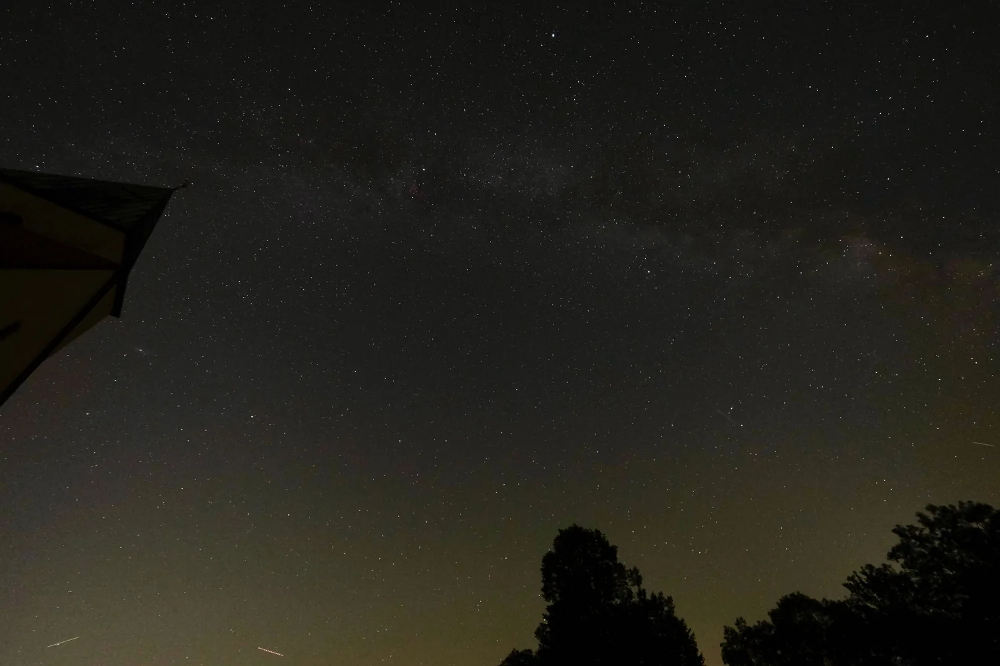

Planetari de Castelló
Un centro de divulgación científica junto al mar, en el Grau de Castelló, con una cúpula de proyección de 25 metros dedicada a la astronomía. Además de las sesiones sobre estrellas y planetas, organiza talleres y exposiciones sobre paleontología y biología pensados para todas las edades. Un buen plan para acercar a los niños a la ciencia con formato de espectáculo, a pocos pasos del paseo marítimo.
Passeig Marítim, 1, 12100 Grau de Castelló (Castellón) Visitar web oficial